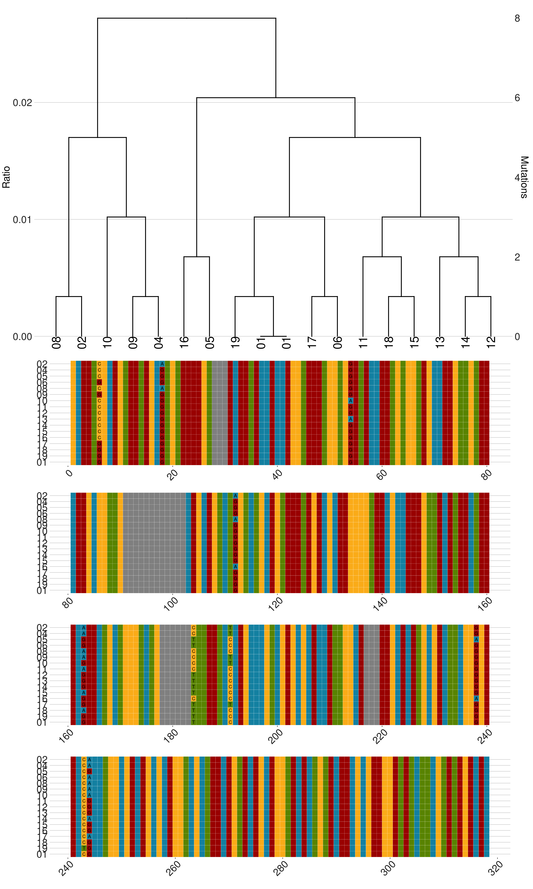

9 IGHV1-69/IGHV1-69D - G8
9.1 Allele appearnce
The group of IGHV1-69/IGHV1-69D includes 20 alleles, 20 out of the alleles are functional.
For each allele we counted the number of appearances across the population, any appearance was considered valid.

9.2 Group alignment
Based on the viewd alleles, we calculated the distance between the germline sequences.

9.3 Sequence depth
To examine the potential cutoff we observed the sequence depth for each allele
9.4 0.5% cutoff
We set an initial cutoff of \(0.5\%\) to determine the potential genotype priors. For this cutoff we examined the zygousity state, such as homozygousity, heterozygousity and so on.
With the selected cutoff we saw that there are 10 zygousity states.
9.5 Observations
This section is editable by clicking on the edit button below. To refresh the section click on the refresh button
You can access the file also from here